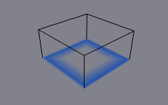
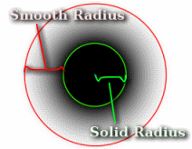
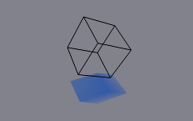

笔刷¶
参考
- 面板
- 类型
笔刷
笔刷类型用来使物体在画布上应用绘画。

笔刷主面板。¶
可以在最上面的笔刷面板定义画笔如何影响画布的表面颜色。
- 绘画颜色
绘画的颜色。
- Alpha
定义笔刷alpha或可见性。 最终的湿度也受到alpha的影响。
- 湿度
定义新添加的绘制的 “湿润” 程度。 温度在“绘画”表面的“打湿贴图”上可以看出来。 “滴水”和“蔓延”效果的速度也取决于油漆的湿度。
- 绝对Alpha
此设置用于限制笔刷alpha影响。 没有它，笔刷会在每一帧上一遍又一遍地“叠加”，提高alpha，从而增加了画笔对画布的影响。 然而，在许多情况下，如果alpha已经达到笔刷本身的程度，则更倾向于不继续叠加笔刷alpha。
- 擦除绘画
使笔刷消融现有的绘画，而在其上添加。
源¶
参考
- 类型
笔刷
- 面板
绘画源¶
绘画源设置允许您定义笔刷影响/交互被如何定制。
- 网格体积
笔刷影响在网格体积内的所有表面点。

源: 网格体积.¶
- 邻近度
仅使用到画笔网格面上最近点的定义距离。 请注意，体积内部不一定受到影响，因为它不靠近表面。

源：邻近度。 笔刷会影响它周围的所有画布像素。¶
- 网格体积 + 邻近度
与体积类型相同，但也影响定义的距离。
- 内侧邻近度
在网格体积内应用邻近度。
- 抵消体积
抵消网格体积内侧的笔刷alpha。

未勾选其他设置的网格体积 + 邻近度笔刷。¶

内侧邻近度。可以看到体积内部邻近度的衰减.¶

抵消体积。体积内侧变得完全的透明。¶
内侧邻近度和抵消体积同时启用。¶
- 物体中心
仅计算到中心的距离，而非与笔刷网格的邻近度(在某些情况下可能非常慢)。 这要快得多，通常也足够好。

源: 物体中心.¶
- 粒子系统
笔刷影响由来自选定粒子系统的粒子定义。
- Effect Solid Radius
Defines the distance, inside which paint is solid color.
- 使用粒子半径
Uses the settings in the particle panel to determine solid radius size. Solid Radius size disabled while Particle Radius enabled.
- 平滑半径
An additional radius outside Solid Radius to add a smooth falloff.
If you set "Smooth Radius" to zero, particle will be painted as a solid sphere. If you set "Solid Radius" to zero, it gets painted as a smooth halo.


源：粒子系统。¶
通用选项¶
- 绘画距离
The maximum distance to mesh surface to affect paint.
- 投影
沿定义的方向将笔刷投影到画布上。基本上这可以当作是“方向对齐”临近度。
已启用投影选项。可以看到画笔如何仅在法线方向影响画布。¶
- 衰减
- Sharp
Paints solid paint within the defined distance.
- Smooth
Makes paint to linearly fade out until becoming completely invisible when it reaches the maximum distance.
- Color Ramp
Allows you to manually make a custom falloff behavior.
速度¶
参考
- 类型
笔刷
- 面板
此面板显示基于物体速度的画笔选项。
上侧是颜色渐变和几个相关的设置。基本上，颜色渐变表示画笔速度值：左侧为零速度，右侧为“最大速度”。速度以“单位每帧”衡量。
上面的复选框可用于定义颜色渐变影响。
- Alpha相乘
使用取决于当前速度的颜色渐变的alpha值，并将笔刷alpha与之相乘。
- 替换颜色
使用来自 颜色渐变部件 的值替换笔刷的颜色。
- 乘以深度
倍增画笔“深度交集”效果。基本上，你可以根据刷速调整位移和波强度。
- 涂抹
启用涂抹可使画笔在移动时 “涂抹” (或 “涂抹” )表面上的现有颜色。可以从*涂抹强度*属性定义此效果的强度。
即使启用涂抹，刷子仍然会起到正常的涂抹效果。如果你想要一个纯粹的涂抹刷使用零alpha。也可以启用 抹去 选项和涂抹。
波浪¶
参考
- 类型
笔刷
- 面板
此面板用于将画笔影响调整为 “波浪” 曲面。
- 波浪类型
选择画笔在波浪模拟中创建的效果。
- 深度变化
此选项使画笔在该点上与曲面的交点深度 更改 时创建波形。如果刷子保持静止，则不会产生影响。
使用此类型的负 “因子” 可以为移动物体(如船只)创建漂亮的 “唤醒” 。
- 阻力
交叉时不断影响表面。波浪也会从这种刷子类型中反射出来。然而，由于波浪模拟算法的性质，如果刷子保持静止，这种类型会在表面产生不自然的“凹痕”。
- 力
直接影响波浪运动的速度。因此，刷子交叉深度不是一对一的效果，而力的强度取决于它。
- 仅镜像
这种类型仅在表面上没有可见效果，但反射已经在表面上的波。
- 因子
调整画笔 “深度” 对模拟的影响程度。您还可以使用负值使画笔向上拉而不是向下拉水。
- 波浪限制
在某些情况下，刷子在表面内部非常深，弄乱整个模拟。您可以使用此设置将影响“限制”到仅一定深度。